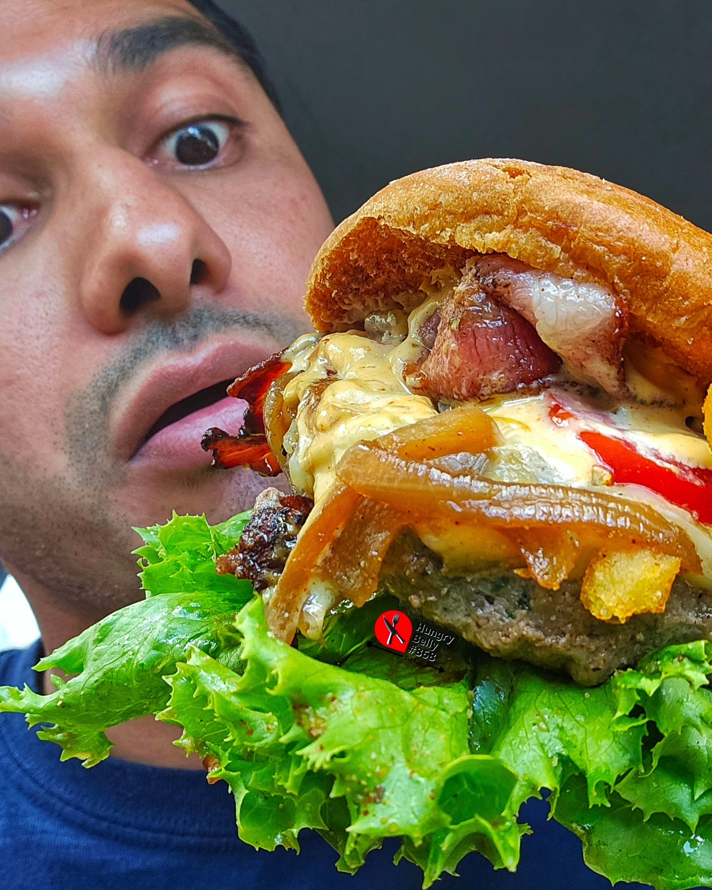
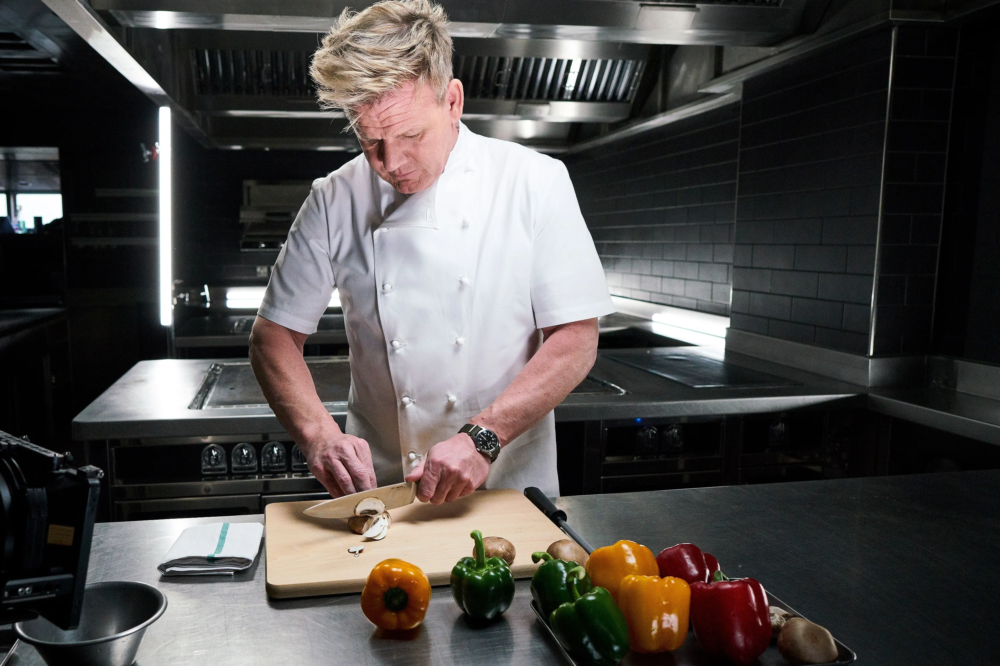

Featured Photos
The Food Critique
I Live For Food, Good Food

For as long as I can remember, I have "LOVED" food. I have always been eager to try new things, taste the flavours of differnt cultures, smell the aroma coming from my kitchen or even the local 519. I believe that food is more than just sustenance—it's a universal language that brings people together, tells stories, and creates lasting memories. Through this blog, I aim to share my food adventures, favorite recipes, and the joy of discovering new flavors. Join me as I travel the country tasting different cuisines from resturants to the food carts. Let's Savour The Flavour, One Bite At A Time!
Check Out This Delicious Food Video on Youtube
Featured Food Bloggers
HungryBelly868
HungryBelly868 is a local Instagram Food Blogger that showcases mouthwatering dishes and culinary adventures. With vibrant photos and engaging captions, HungryBelly offers followers a feast for the eyes, featuring everything from homemade recipes to restaurant highlights. It’s a go-to account for food lovers looking to discover new flavors and get inspired in the kitchen.
Gordon Ramsey
Gordon Ramsay is a British celebrity chef, restaurateur, and television personality known for his fiery temper, sharp wit, and high culinary standards. He has earned multiple Michelin stars for his restaurants and gained worldwide fame through popular TV shows like "Hell's Kitchen," "MasterChef," and "Kitchen Nightmares." Ramsay is also an author of numerous cookbooks and a successful entrepreneur with restaurants around the globe. Despite his tough exterior on screen, he's respected for his dedication to culinary excellence and mentoring young chefs.